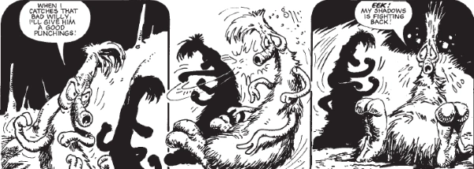

Most often a particular character, but sometimes also referencing an entire race, the Gronk we most usually see is a companion of Johnny Alpha and Wulf, who works as their medic. Gronks are timid, nervous creatures who tend to faint at the first sign of trouble. Despite this being a core characteristic, the Gronk was rewritten during the Strontium Dogs sequence as a fearless, gun-toting warrior. Also, there was an evil terminator version called the Gronkinator.
Art by Carlos Ezquerra
| Story Title | Parts | Pages | w indicates a wraparound coverCovers | Year(s) | Issues | Writer | Artist | Colourist | Letterer |
|---|---|---|---|---|---|---|---|---|---|
From Strontium Dog This Gronk is Gloppus.Papa Porka | 3 | 15 | 4: Carlos Ezquerra 1 | 1978 | Reprints: SFS9SL3-5 | John Wagner | Carlos Ezquerra | <-- pp1-2, [b&w] | 1: Peter Knight 2‑3: Jack Potter various |
From Strontium DogTwo-Faced Terror | 4 | 23 | 13: Carlos Ezquerra 1 | 1978 | SL12-15 | John Wagner | Carlos Ezquerra | <-- pp1-2 e., [b&w] | 1,4: Peter Knight 2: Paul Bensberg 3: John Aldrich various |
From Strontium DogDemon Maker | 3 | 15 | 0 | 1978 | SL17-19 | John Wagner | 1: Brendan McCarthy 2‑3: Ian Gibson various | <-- 4pp, [b&w] | 1: Steve Potter 2: Peter Knight 3: David Gould various |
From Strontium DogThe Brain | 2 | 10 | 0 | 1978 | SL21-22 | John Wagner | Carlos Ezquerra | <-- pp1-2 e., [b&w] | Paul Bensberg |
From Strontium Dog[The Galaxy Killers] | 9 | 46 | 0 | 1978-1979 | Reprints: M214 (supplement)86-94 | John Wagner | Carlos Ezquerra | [b&w] | 1: Peter Knight 2‑9: Carlos Ezquerra various |
From Strontium DogJourney Into Hell | 15 | 73 | 104: Carlos Ezquerra 107: Carlos Ezquerra 109: Carlos Ezquerra 116: Carlos Ezquerra 118: Carlos Ezquerra 5 | 1979 | Reprints: M3.64‑M3.67104-118 | John Wagner | Carlos Ezquerra | <-- pp1-2 e., [b&w] | John Aldrich |
From Strontium DogDeath's Head | 4 | 21 | 179: Carlos Ezquerra 181: Carlos Ezquerra 2 | 1980 | Reprints: M3.70‑M3.71178-181 | Alan Grant | Carlos Ezquerra | [b&w] | Steve Potter |
From Strontium DogThe Schicklgruber Grab | 7 | 36 | 185: Carlos Ezquerra 1 | 1980 | Reprints: M3.68‑M3.69182-188 | Alan Grant | Carlos Ezquerra | [b&w] | Steve Potter |
From Strontium DogThe Bad Boys Bust | 4 | 21 | 0 | 1981 | Reprints: M3.78194-197 | Alan Grant | Carlos Ezquerra | [b&w] | Steve Potter |
From Strontium DogThe Gronk Affair | 4 | 22 | 0 | 1981 | Reprints: M3.79224-227 | Alan Grant | Carlos Ezquerra | [b&w] | Jack Potter |
From Strontium DogThe Kid Knee Caper | 6 | 31 | 0 | 1981 | Reprints: M4.09‑M4.10228-233 | Alan Grant | Carlos Ezquerra | [b&w] | Jack Potter |
From Strontium DogOutlaw | 23 | 117 | 363: Carlos Ezquerra 366: Carlos Ezquerra 369: Carlos Ezquerra 373: Carlos Ezquerra 381: Carlos Ezquerra 385: Carlos Ezquerra 6 | 1984 | 363-385 | Alan Grant | Carlos Ezquerra | [b&w] | Jack Potter |
From Strontium DogsReturn of the Gronk | 8 | 48 | 1 | 1993 | Reprints: M305 (supplement)817-824 | Garth Ennis | Nigel Dobbyn | <-- | Ellie de Ville |
From Strontium DogsHow the Gronk Got His Heartses | 2 | 12 | 0 | 1993 | Reprints: M305 (supplement)850-851 | Garth Ennis | Nigel Dobbyn | <-- | Gary Gilbert |
From Strontium DogsThe Darkest Star | 12 | 61 | 860: Nigel Dobbyn 866: Nigel Dobbyn 2 | 1993 | Reprints: M306 (supplement)855-866 | Garth Ennis | Nigel Dobbyn | <-- | Glib: 1‑5, 9‑12 Ellie De Ville: 6‑8 various |
From Strontium DogsThe Cage | 1 | 6 | Nigel Dobbyn 1 | 1994 | Reprints: M320 (supplement)SDPP | Peter Hogan | Nigel Dobbyn | <-- | Annie Parkhouse |
From Strontium DogsCrossroads | 3 | 18 | 0 | 1994 | Reprints: M320 (supplement)897-899 | Peter Hogan | Nigel Dobbyn | <-- | Annie Parkhouse |
From Strontium DogsThe Alphabet Man | 3 | 18 | 937: Nigel Dobbyn 1 | 1995 | 937-939 | Peter Hogan | Nigel Dobbyn | <-- | Annie Parkhouse |
From Strontium DogsHigh Moon | 8 | 48 | 941: Mark Harrison 947: Mark Harrison 2 | 1995 | 940-947 | Peter Hogan | Mark Harrison | <-- | Bunty Mayhew |
From Strontium Dogs Heavily edited by David Bishop.Hate and War | 7 | 43 | 993: Sean Phillips 996: Henry Flint 2 | 1996 | 993-999 | As Alan Smithee. Peter Hogan | Trevor Hairsine | <-- | Ellie de Ville |
Doesn't feature The Gronk from Strontium Dog, but rather the species.The Trouble With Gronkses | 1 | 9 | 0 | 2020 | Reprints: 2KRC12170R | David Baillie | Rob Davis | <-- | Jim Campbell |
From Strontium DogOnce Upon a Time in der Vest | 1 | 8 | 0 | 2020 | 2212 | Rob Williams | Laurence Campbell | Dylan Teague | Jim Campbell |
| >> Posters << | |||||||||
Star Pin‑Up.Gronk | 1 | 1 | 0 | 1978 | 91 | n/a | Carlos Ezquerra | <-- | n/a |
| year | episodes | pages |
| 1977 | 0 | 0 |
| 1978 | 20 | 68 |
| 1979 | 16 | 114 |
| 1980 | 11 | 57 |
| 1981 | 14 | 74 |
| 1982 | 0 | 0 |
| 1983 | 0 | 0 |
| 1984 | 23 | 117 |
| 1985 | 0 | 0 |
| 1986 | 0 | 0 |
| 1987 | 0 | 0 |
| 1988 | 0 | 0 |
| 1989 | 0 | 0 |
| 1990 | 0 | 0 |
| 1991 | 0 | 0 |
| 1992 | 0 | 0 |
| 1993 | 22 | 121 |
| 1994 | 4 | 24 |
| 1995 | 11 | 66 |
| 1996 | 7 | 43 |
| 1997 | 0 | 0 |
| 1998 | 0 | 0 |
| 1999 | 0 | 0 |
| 2000 | 0 | 0 |
| 2001 | 0 | 0 |
| 2002 | 0 | 0 |
| 2003 | 0 | 0 |
| 2004 | 0 | 0 |
| 2005 | 0 | 0 |
| 2006 | 0 | 0 |
| 2007 | 0 | 0 |
| 2008 | 0 | 0 |
| 2009 | 0 | 0 |
| 2010 | 0 | 0 |
| 2011 | 0 | 0 |
| 2012 | 0 | 0 |
| 2013 | 0 | 0 |
| 2014 | 0 | 0 |
| 2015 | 0 | 0 |
| 2016 | 0 | 0 |
| 2017 | 0 | 0 |
| 2018 | 0 | 0 |
| 2019 | 0 | 0 |
| 2020 | 2 | 17 |
| 2021 | 0 | 0 |
| 2022 | 0 | 0 |
Comic strip data (excludes other content):